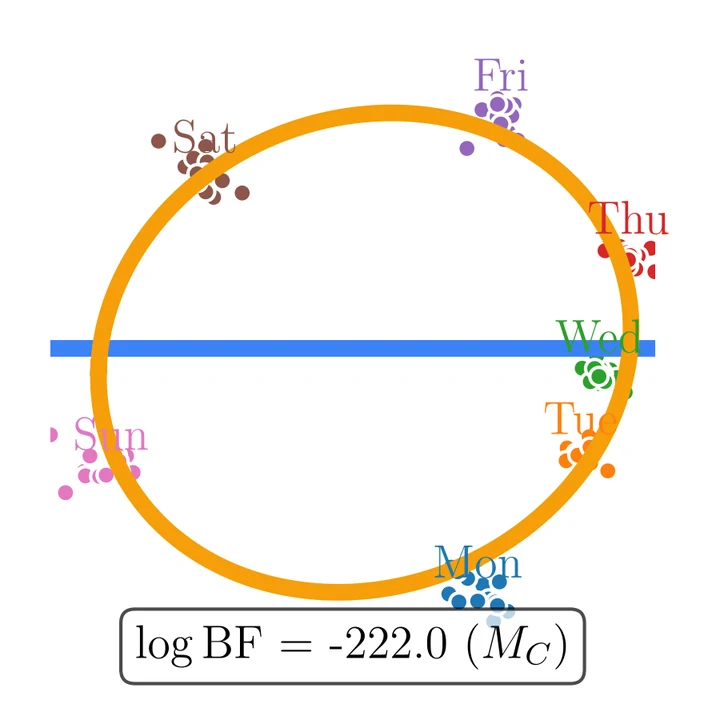
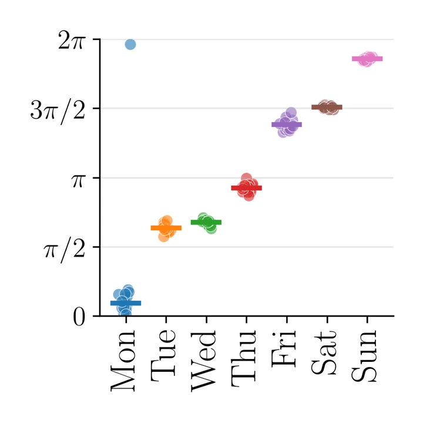
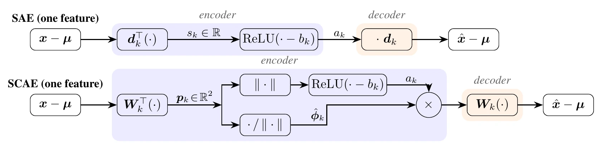
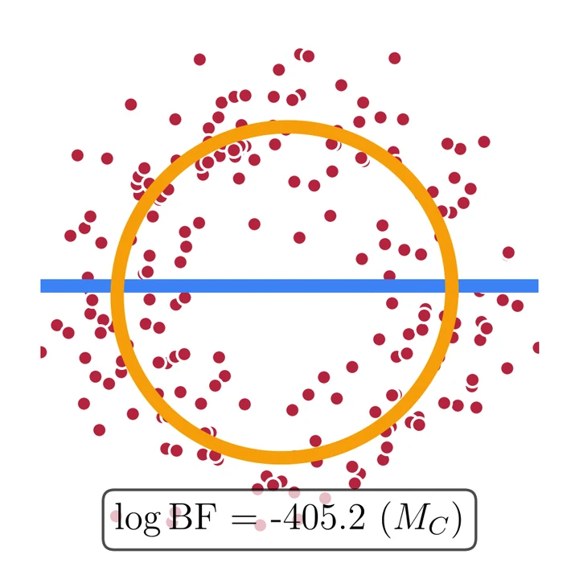

Research · LLM interpretability
Quantifying the Geometry of Concepts: A Two-Stage Bayesian Framework for LLM Interpretability


Abstract
The Linear Representation Hypothesis posits that neural networks encode concepts as single directions in activation space, though recent findings suggest certain features occupy circular manifolds. Current evidence for either geometry relies heavily on geometric heuristics, such as PCA or cosine similarity, which lack a rigorous probabilistic foundation. To address this, we introduce a two-stage framework to quantitatively evaluate and extract concept geometry. First, we define competing linear and circular generative models, employing Bayesian Model Comparison (BMC) to evaluate the evidence for each. Second, derived via MAP estimation from the circular model, we introduce the Sparse Circular Autoencoder (SCAE), a novel autoencoder architecture that extracts interpretable, feature-level angles. We apply this framework to Llama-3-8B-Instruct across four concepts (days, months, numbers, and sentiment). BMC decisively detects multi-dimensional curvature in all cases, while the SCAE successfully disambiguates true periodicity (days, months) from helical (numbers) and uninterpretable, artefactual curvature (sentiment). Together, this unified approach demonstrates how geometric heuristics can be replaced by rigorous Bayesian inference and matched architectural extraction.
Key idea
Identify the geometry, then extract it with a matched autoencoder
Bayesian Model Comparison
Two generative models compete to explain the same activations: a linear model \(M_L\), where a scalar latent moves along a line, and a circular model \(M_C\), where an angle moves around an ellipse. The log Bayes factor \(\log \mathrm{BF} = \log p(\mathbf X\mid M_L) - \log p(\mathbf X\mid M_C)\) carries an automatic Occam penalty: a more complex model must fit the data substantially better to be preferred.
Sparse Circular Autoencoders
Derived by MAP estimation from the circular model, the SCAE replaces each SAE direction \(\mathbf d_k\) with a 2-D subspace \(\mathbf W_k\). The encoder splits the projection into a sparse magnitude \(a_k\) and a unit direction \(\hat{\boldsymbol\phi}_k\), giving every feature an interpretable angle. Use an SAE for linear concepts and an SCAE for circular ones.
Method
Two generative models, one Bayes factor
Given \(N\) activation vectors \(\mathbf x_n \in \mathbb R^m\) for one concept (after template-mean subtraction and PCA), both models share an offset \(\boldsymbol\mu\) and isotropic noise \(\sigma^2\), and differ only in their one-dimensional latent manifold.
Linear model \(M_L\)
Integrating out \(z_n\) gives a closed-form likelihood, evaluated in \(\mathcal O(Nm)\) with the matrix determinant lemma and the Woodbury identity:
Circular model \(M_C\)
with \(\mathbf W \in \mathbb R^{m\times 2}\). The angle is integrated numerically on a uniform grid of \(K = 200\) points:
Fitting with EM
Both models are fitted by Expectation–Maximisation, initialised from PCA. For \(M_L\) the posterior over \(z_n\) is Gaussian; for \(M_C\) the E-step computes grid posteriors \(p(z^{(k)}\mid\mathbf x_n)\) and the sufficient statistics \(\mathbb E[\boldsymbol\phi]\) and \(\mathbb E[\boldsymbol\phi\boldsymbol\phi^\top]\), after which the M-step updates are closed form:
Laplace-approximated evidence and the Bayes factor
Each model’s marginal likelihood is approximated around the EM solution \(\hat{\boldsymbol\theta}\), with weakly informative Gaussian priors on \(\boldsymbol\mu\), \(\mathbf w\) (or \(\mathbf W\)) and \(\log\sigma^2\), and a diagonal Hessian \(\mathbf H\) of the negative log posterior computed by central finite differences:
The \(-\tfrac12\log\det\mathbf H\) term is the Occam penalty: the circular model has \(m\) more parameters and must earn them through a better fit. A BIC approximation, \(\log p(\mathbf X\mid\hat{\boldsymbol\theta}) - \tfrac{k}{2}\log N\), is used as a check that verdicts are not an artefact of the Laplace approximation. Both latent priors are the “default” ones for their domain (\(\mathcal N(0,1)\) on \(\mathbb R\), \(\mathcal U(0,2\pi)\) on \(S^1\)), so any difference in evidence is driven by geometry, not by the prior family.
Sparse Circular Autoencoder
A standard SAE with \(K\) features is MAP estimation under \(\mathbf x = \boldsymbol\mu + \sum_k a_k \mathbf d_k + \boldsymbol\epsilon\) with a Laplace prior on \(a_k \ge 0\). Replacing each direction with a 2-D subspace and a circular latent \(z_k\) with a uniform prior gives the SCAE objective, identical in form to the SAE loss (MSE + \(\ell_1\)):
The encoder amortises this optimisation:

The unit vector \(\hat{\boldsymbol\phi}_k\) implicitly encodes the angle \(z_k = \operatorname{atan2}(p_{k,2}, p_{k,1})\), but the angle is never computed explicitly during training: gradients flow through the normalisation and the subspace bases, avoiding the discontinuity of \(\operatorname{atan2}\) at \(\pm\pi\).
Experimental setup
Synthetic validation, then Llama 3
- Model
- Meta-Llama-3-8B-Instruct, residual stream at layer 16, taken at the last sub-token of the target word.
- Concepts
- days (7 labels × 15 templates) and months (12 × 15), expected circular; numbers 0–9 (10 × 15), expected helical; sentiment (7 × 10, “terrible” → “excellent”), expected linear. The repository also includes a size concept (6 × 15, “tiny” → “enormous”) that is not reported in the paper.
- Preprocessing
- Per-template mean subtraction to remove template common-mode variance, then PCA to \(m = 20\) dimensions.
- Synthetic data
- 50 datasets per setting, generated from the linear and circular models with parameters sampled from a standard normal, \(\sigma^2 = 0.3\) and \(N = 200\), in \(m = 3\) (visualisable) and \(m = 20\) (matching the LLM setting).
- Autoencoders
- \(K = 10\) features, 5000 epochs, Adam with a cosine schedule, batch size 64, learning rate \(3\times10^{-3}\), \(\lambda = 0.15\) (and \(0.05\) for the LLM sensitivity check). A feature is alive if it activates for more than 10% of samples.
- Compute
- BMC fitting takes about a minute on a CPU; SAE/SCAE training about two minutes per concept on a single GPU.
Results
Synthetic validation
On 50 synthetic datasets per setting, BMC favours the ground-truth model every time, while the SAE reconstructs better than the SCAE every time, even on circular data. Reconstruction error cannot identify geometry; that is the motivation for the two-stage approach.
| BMC | Autoencoder MSE (\(\times10^{-3}\)) | |||||
|---|---|---|---|---|---|---|
| \(m\) | Ground truth | log BF | Favoured | SAE | SCAE | Favoured |
| 3 | Linear | +45.8 ± 1.8 | Linear ✓ | 71 ± 5 | 111 ± 1 | Linear ✓ |
| 3 | Circular | −148.5 ± 1.7 | Circular ✓ | 4.9 ± 0.1 | 127 ± 1 | Linear ✗ |
| 20 | Linear | +58.8 ± 1.8 | Linear ✓ | 138.3 ± 0.5 | 331 ± 1 | Linear ✓ |
| 20 | Circular | −375.2 ± 3.6 | Circular ✓ | 130.8 ± 0.8 | 342 ± 2 | Linear ✗ |
BMC recovers the true geometry
On linear data, \(M_C\) fits a degenerate ellipse that collapses onto the line, yet BMC correctly favours \(M_L\) because the Occam penalty punishes the unused second basis direction. On circular data the evidence is decisive, and stronger in \(m = 20\) than \(m = 3\) because \(M_C\)’s extra \(m\) parameters incur a larger penalty that only a genuine circle can overcome.
A lower MSE does not imply the right geometry
The SAE spreads activation across many features (\(L_0 \approx 7\) in \(m = 20\)) while the SCAE collapses to a single alive feature (\(L_0 \approx 1\)), because one 2-D feature can absorb enough variance to push the others below the ReLU threshold. The SAE’s many cooperating atoms reconstruct better even when the manifold is circular. BMC is needed because it penalises extra parameters instead of rewarding capacity.
Llama-3-8B-Instruct, layer 16
| log BF | ΔMSE (\(\times10^{-3}\)) | |||||
|---|---|---|---|---|---|---|
| Concept | Expected | Laplace | BIC | Favoured | \(\lambda = 0.15\) | \(\lambda = 0.05\) |
| Days | Circular [Engels+] | −222.0 | −211.8 | Circular | −68.7 | +8.65 |
| Months | Circular [Engels+] | −222.4 | −210.0 | Circular | −74.2 | +17.1 |
| Numbers 0–9 | Helical [Anthropic] | −166.9 | −151.1 | Circular | −37.1 | +32.0 |
| Sentiment | Linear [Tigges+] | −185.1 | −169.1 | Circular | −73.0 | +42.0 |
BMC detects curvature everywhere
\(M_C\) is overwhelmingly favoured for all four concepts, matching prior findings for periodic and helical concepts. The circular verdict for sentiment, expected to be linear, is unexpected: in the top three PCs, sentiment shows genuine multi-dimensional spread beyond its dominant linear direction, which the rank-2 \(M_C\) captures and the rank-1 \(M_L\) cannot. BIC gives nearly identical verdicts, so this is not an artefact of the Laplace approximation.
Why does BMC favour circles for every concept?
Rank-1 vs. rank-2. \(M_L\) has covariance \(\mathbf w\mathbf w^\top + \sigma^2\mathbf I\); \(M_C\) has \(\mathbf W\mathbf W^\top + \sigma^2\mathbf I\). Concepts with variance across several PCs prefer \(M_C\) whenever the better fit outweighs the complexity penalty, so BMC tests dimensionality alongside geometry. Isotropic noise. Real activations are unlikely to have isotropic residuals, and \(M_C\)’s extra parameters may absorb structured variance unrelated to circular geometry.
Fitted manifolds
Activations projected to the first two principal components, with the fitted linear (blue) and circular (orange) manifolds.



Results · Stage 2
SCAE angles separate periodic, helical and artefactual curvature
Where BMC says “curved” for every concept, the angles recovered by the SCAE tell the cases apart. Choose a concept to compare the SAE’s directions with the SCAE’s learned circles and the angle it assigns to each label.


Actual periodicity
Angles are well separated, semantically ordered and wrap around the circle.
Helical structure
Angles are monotonic but do not wrap, consistent with the circular component of a helix.
Non-periodic curvature
Angles lack a clear semantic ordering, consistent with the curvature being artefactual rather than a meaningful circle.
Reconstruction depends on \(\lambda\)
At \(\lambda = 0.15\) the SAE achieves lower MSE for every concept, but reducing \(\lambda\) to \(0.05\) restores the SCAE’s advantage (Table 2), so the gap reflects \(\lambda\)-sensitivity rather than data complexity: a higher \(\lambda\) leads to over-sparsity and worsens MSE. While SAE features cluster values semantically, they have no notion of periodicity and fracture a concept across several features. The SCAE captures periodic structure in a single feature with an interpretable angle.
Conclusion
From geometric heuristics to Bayesian evidence
Framing the linear-vs-circular debate as Bayesian model comparison gives a quantitative criterion where PCA plots and cosine similarities could only suggest one. Applied to LLM activations, BMC favoured circular structure universally, exposing a limitation of the binary model family: the rank-2 circular model readily absorbs generic multi-dimensional structure. Pairing BMC with a matched autoencoder addresses this, since the SCAE-recovered angles discriminate true periodicity (days, months), helical structure (numbers) and non-periodic curvature (sentiment).
Future work: expand the generative family to arc, helical or polynomial models and allow flexible noise covariance, to isolate curvature without implying strict periodicity. Explicit manifolds could also enable activation steering, such as smoothly rotating predictions around a periodic feature.
Reproduce
Code
The pipeline lives in scripts/: extract activations, generate synthetic data, preprocess, run BMC, then train the SAE and SCAE. All hyperparameters are in scripts/config.py.
Running the Llama 3 experiments requires access to the Llama-3-8B-Instruct weights on Hugging Face under the Meta Llama 3 Community License.
git clone https://github.com/thedylone/bayesian-llm-geometry.git
cd bayesian-llm-geometry
pip install -r requirements.txt && pip install -e .
python scripts/04_run_bmc.py # Stage 1
python scripts/05_plot_bmc.py
python scripts/06_train_sae.py # Stage 2
python scripts/07_plot_sae.pyCitation
BibTeX
@misc{chua2026geometry,
title = {Quantifying the Geometry of Concepts: A Two-Stage
Bayesian Framework for LLM Interpretability},
author = {Chua, Dylan},
year = {2026},
howpublished = {\url{https://projects.thedylone.com/bayesian-llm-geometry/}},
note = {Code: \url{https://github.com/thedylone/bayesian-llm-geometry}}
}